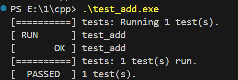

DBMS系列一：纯C语言单元测试——cmocka
DBMS系列一：纯C语言单元测试——cmocka
1. 前言
-
背景介绍：
- 在开发数据库管理系统（DBMS）时，保证代码的正确性和高质量非常重要，尤其是底层操作（如内存管理、数据处理等）。
- 本系列将通过C语言示例，向读者展示如何为DBMS项目编写高效、可靠的单元测试。
-
本文重点：
- 本篇重点讲解如何使用
cmocka这一轻量级的C语言单元测试框架，帮助开发者提高代码的可测试性和稳定性。
- 本篇重点讲解如何使用
2. 什么是单元测试？
-
定义：
- 单元测试是一种验证单个代码单元（如函数或模块）功能正确性的测试方法。
-
单元测试的重要性：
- 提升代码质量，确保代码按照预期工作。
- 帮助发现并修复bug，减少后期调试时间。
- 易于进行代码重构时保持功能稳定。
-
C语言项目中的挑战：
- C语言项目中进行单元测试时，如何模拟底层资源（如内存分配、I/O操作）并验证它们的正确性？
3. 选择cmocka框架
-
介绍cmocka：
cmocka是一个轻量级的C语言单元测试框架，提供了简洁且易用的API。
-
cmocka的优势：
- 简单易集成，不需要大量配置。
- 强大的模拟（mock）和断言（assert）功能，支持多种测试场景。
- 能够通过模拟函数、断言来测试底层代码（如内存分配、函数返回值等），特别适合C语言项目。
4. 安装与配置
-
安装步骤：
-
安装 CMake，确保你的系统支持CMake构建。
-
下载源代码：
- 访问 cmocka GitHub页面，获取源代码。
-
构建过程（使用MinGW）：
1
2
3
4
5mkdir -p F:/NewDBMS/external/cmocka-1.1.0/build
cd F:/NewDBMS/external/cmocka-1.1.0/build
cmake -DCMAKE_INSTALL_PREFIX=F:/cmocka/install ..
mingw32-make
mingw32-make install -
配置CMakeLists.txt：
1
2
3
4
5find_package(cmocka REQUIRED
PATHS ${CMOCKA_ROOT}
PATH_SUFFIXES lib/cmake/cmocka
NO_DEFAULT_PATH
)
-
5. 编写第一个测试用例
-
代码示例：
- 创建一个简单的加法函数
add()，并为其编写单元测试。
1
2
3
4
5
6
7
8
9
10
11
12
13
14
15
16
17
18
19
20
21
int add(int a, int b) {
return a + b;
}
static void test_add(void **state) {
(void) state;
assert_int_equal(add(2, 3), 5); // 2 + 3 = 5
assert_int_equal(add(0, 0), 0); // 0 + 0 = 0
assert_int_equal(add(-1, 1), 0); // -1 + 1 = 0
}
int main(void) {
const struct CMUnitTest tests[] = {
cmocka_unit_test(test_add),
};
return cmocka_run_group_tests(tests, NULL, NULL);
} - 创建一个简单的加法函数

6. 常见API总结
-
核心测试函数：
cmocka_run_group_tests()：运行一组测试用例，支持setup和teardown功能，用于全局的初始化与清理。cmocka_unit_test()：注册单个测试用例，并将其加入测试套件。
-
常用断言函数：
assert_int_equal()、assert_true()、assert_string_equal()等。- 断言用于验证函数返回值、状态、内存等是否符合预期。
-
模拟函数与存根：
mock()：用于模拟函数返回值，配合will_return()设置预期返回值。expect_value()：用于设置期望函数的参数值。
7. 内存泄漏检测
-
内存管理与检测：
CMOCKA_MALLOC和CMOCKA_FREE宏替代malloc和free，用于追踪内存分配并检测内存泄漏。- 通过这些宏，
cmocka能自动检测测试过程中未释放的内存，帮助开发者避免内存泄漏问题。
8. 测试组织与执行
-
测试组织：
- 你可以将多个测试用例按照功能或模块组织在不同的测试组中，通过
cmocka_run_group_tests()运行。 - 提供
setup和teardown函数，用于在测试执行前后进行环境的初始化与清理。
- 你可以将多个测试用例按照功能或模块组织在不同的测试组中，通过
9. 总结与展望
-
回顾：
- 本篇文章介绍了如何使用
cmocka框架来为C语言项目编写单元测试。 - 通过简单的代码示例，展示了如何编写、组织和运行测试用例。
- 本篇文章介绍了如何使用
-
下一篇预告：
- 在下一篇中，将会探讨如何在DBMS项目中实现文件管理模块，包括文件的读写、存储结构的设计等，如何用C语言实现并进行测试。
本博客所有文章除特别声明外，均采用 CC BY-NC-SA 4.0 许可协议。转载请注明来源 曜花缘的技术笔记！